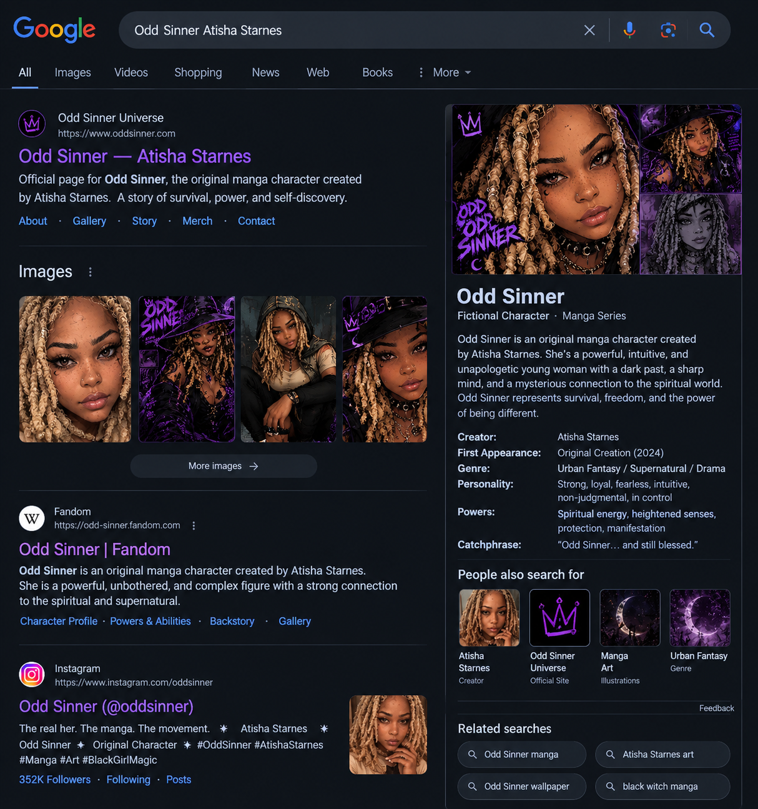

Character Story
The Beginning
Odd Sinner's journey is about learning who she is, trusting her intuition, surviving what tried to break her, and discovering the power that comes from accepting every part of herself.
A supernatural manga character created by Atisha Starnes — a story of survival, identity, intuition, and unapologetic self-discovery.
Enter the Odd Sinner Universe
Odd Sinner is an original character whose world blends urban fantasy, supernatural mystery, drama, and manga-inspired visual storytelling. She stands apart, embraces what makes her different, and turns difficult experiences into strength.
Odd Sinner's journey is about learning who she is, trusting her intuition, surviving what tried to break her, and discovering the power that comes from accepting every part of herself.
She notices what others miss and trusts her instincts when the world becomes uncertain.
A supernatural connection gives her an unusual awareness of the forces surrounding her.
Her greatest strength is the ability to keep moving forward without losing herself.
Explore the evolving visual identity of Odd Sinner, from manga portraits to gothic and supernatural interpretations.